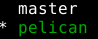

Alguns posts atrás falei um pouco sobre Git e GitHub mostrando alguns conceitos básicos e um fluxo de trabalho para projetos simples e, geralmente, individuais.
Neste post pretendo apresentar um fluxo de trabalho mais voltado para projetos envolvendo várias pessoas.
Branches
Antes de falar sobre este tópico é importante falar uma
funcionalidade do Git (e de outros sistemas de controle de
versão): branch.
Uma branch é uma cópia do repositório que permitem que modificaçẽs
sejam feitas em paralelo na branch original e na nova gerada. Por
padrão repositórios Git trabalham na branch master. Esta branch
é geralmente usada para manter uma versão mais estável do projeto,
sem funcionalidades instáveis ou em fase experimental.
O comando git usando para manipular branches é, como esperado,
git branch. Sem nenhuma
opção ele lista todas as branches existentes e destaca a branch
em uso. Por exemplo, num repositório com as branches master e
pelican com a segunda em uso, o comando git branch exibiria:

Para criar uma branch usamos git branch nome-da-nova-branch,
para mudar de branch em uso
git checkout.
Uma tarefa bem comum é criar uma nova branch, geralmente para
algum tipo de experimento ou correção, e defini-la como corrente.
Isto pode ser feito da seguinte forma:
git branch nova-branch
git checkout nova-branch
Como esta é uma tarefa bastante comum, há um atalho para isso.
git checkout -b nova-branch
É possível, e em alguns casos muito útil, fazer o checkout de apenas alguns arquivos de uma determinada branch. A sintaxe para isto é:
git checkout uma-branch-qualquer -- arquivo
Colaboração com branches
Uma forma bastante interessante de melhorar a colaboração num projeto é usando branches. É possível usar apenas um repositório central (no GitHub) e, ainda assim, manter a organização.
A estatégia é: * Usar uma branch nova para cada funcionalidade ou correção * Fazer push desta branch para o respositório no GitHub * Abrir um Pull Request desta branch para master.
Imaginando que queremos implementar uma funcionalidade X, podemos fazer (localmente):
git checkout -b X
# Fazer as alterações
git add arquivos
git commit -m "Implementada funcionalidade X"
git push -u origin X
A última linha criará a branch no GitHub, se não existir,
e enviará as alterações feitas localmente a esta branch remota.
Feito isto é possível abrir um Pull Request no GitHub,
possibiliando discutir o código antes do merge com a master.
Se necessário adicionar mais modificações ao mesmo pull request basta fazer mais pushes na branch e eles serão adicionados automagicamente.